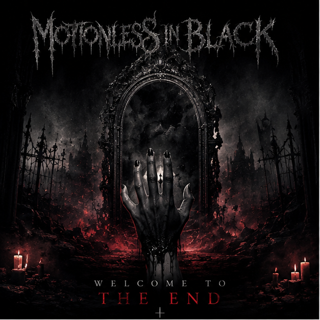
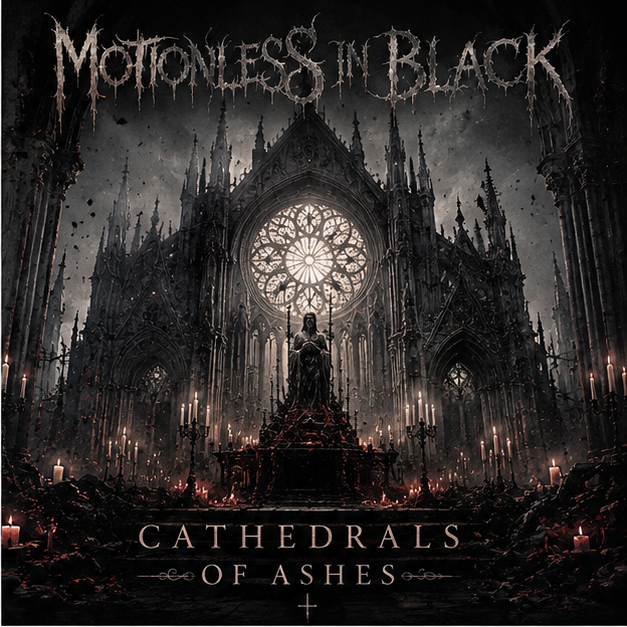
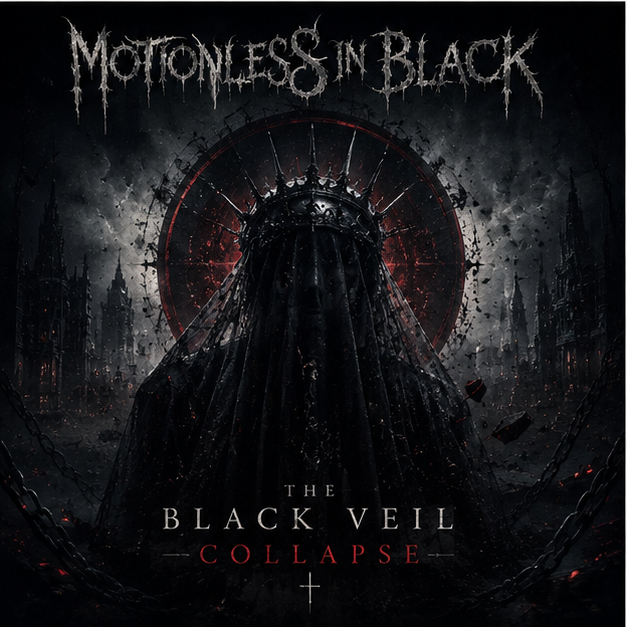
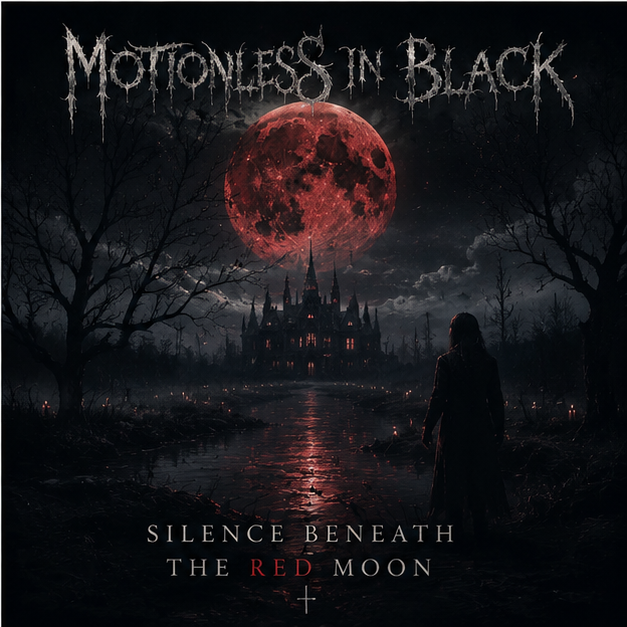

Дискография Motionless in Black — это четыре мрачные главы одной истории. Каждый альбом показывает новую сторону группы: страх, разрушение, внутреннюю борьбу и принятие собственной тьмы.

Первый альбом Motionless in Black звучит сыро, холодно и тревожно. Он рассказывает о начале падения героя во внутреннюю тьму. В песнях много тяжёлых гитар, резких ударных, мрачных электронных шумов и криков, будто записанных в заброшенном здании. Главные темы альбома — одиночество, страх, потеря себя и первые попытки выбраться из хаоса. Welcome To The End открывает историю группы и задаёт её главный тон: тьма здесь не просто фон, а отдельный персонаж, который постоянно находится рядом.

Второй альбом стал более готическим и театральным. В Cathedrals of Ashes появляются хоровые вставки, органные звуки, медленные вступления и ощущение огромного разрушенного собора. Этот релиз посвящён маскам, вине, памяти и прошлому, которое невозможно похоронить. Музыка звучит шире и кинематографичнее: агрессивные куплеты сменяются драматичными припевами, а каждая песня похожа на сцену из тёмного фильма. Альбом показывает группу более зрелой и атмосферной.

The Black Veil Collapse — самый тяжёлый и злой альбом группы. Здесь больше индустриального звучания, резких переходов, механических эффектов и агрессивного вокала. По смыслу альбом рассказывает о моменте, когда герой перестаёт прятаться за маской. Чёрная вуаль падает, и вместе с ней рушится старая версия человека. В песнях много гнева, боли и желания уничтожить всё, что держало его в прошлом. Это самая разрушительная глава Motionless in Black.

Четвёртый альбом звучит мрачнее, глубже и эмоциональнее. Silence Beneath the Red Moon посвящён тишине после разрушения. Здесь герой уже не убегает от своей тьмы, а смотрит ей прямо в лицо. В музыке становится больше мелодии, атмосферных пауз, чистого вокала и тяжёлых, медленных моментов. Красная луна символизирует память, боль и силу, которая появляется после принятия себя. Этот альбом завершает первую большую эпоху группы и оставляет ощущение холодной, но честной надежды.